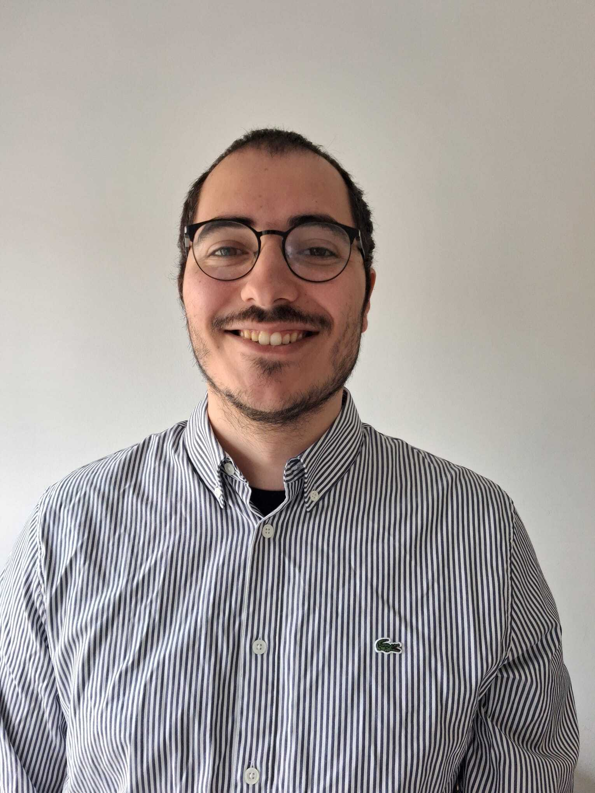

Publications
Here is a list of my publications:
-
DOM-XSS Detection via Webpage Interaction Fuzzing and URL Component Synthesis
Network and Distributed System Security Symposium (NDSS'26)
-
NODEMEDIC-FINE: Automatic Detection and Exploit Synthesis for Node.js Vulnerabilities
Network and Distributed System Security Symposium (NDSS'25)
-
Toward Tool-Independent Summaries for Symbolic Execution
37th European Conference on Object-Oriented Programming (ECOOP 2023)
Artifact Review
I was also part of artifact review committees for the following conferences: